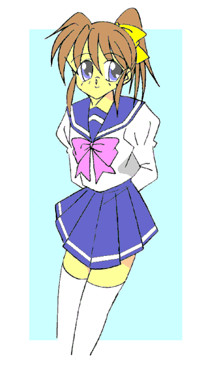
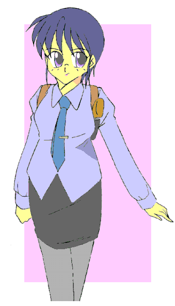

「ロゼ様」
「何用だ？ 大賢者スズ」
「神聖都市ミュスアシへの侵攻、思いとどまれませぬか？」
「……スズよ、お前はわらわを笑わせに来たのか？」
「私は真剣です。どうかこれ以上の殺戮はおやめください。共存共栄——それこそが我等のこれからの生き方ではありませんか？」
「くだらん。弱ければ奪われるだけの話……命も、財もな。生きる価値は強くありさえすればよいのだ」
「ただ奪うばかりでは何も産み出しませんっ。これ以上虚しい闘いをするのは、どうか——」
「くどい」
戦乙女セーラ Ｖｏｌ．５
作：城弾
太古の昔、アマッドネスがセーラたちの守る都市の直前ではった陣。その中のひときわ豪華な陣幕に、ひとりの人物が来訪した。
手に杖を持ち、その身にローブをまとっている。警護のものと会話を交わし、許可を得て幕の中に入る。
「ロゼ様」
ローブ姿の人物は、中にいた人物に一礼した。
「何用だ？ 大賢者スズ」
奥に座していた陣幕の主は突然の来訪者に、物憂げにそう答えた。
美人だが、きつい印象の顔立ちの持ち主。血を吸ったように真っ赤なひと重（え）の着物を、素肌の上に無造作に羽織っている。
「神聖都市ミュスアシへの侵攻、思いとどまれませぬか？」
スズと呼ばれたローブ姿の人物は、目深にかぶっていたフードをはずした。
年の頃は２０代前半。化粧っけがなく少々地味だが、すっきりした知的な顔だち。髪は編みこんで後ろに垂らしてある。
体つきはローブに隠れてわからないが、ところどころでメリハリが利いているのを垣間見ることができた。
「……スズよ、お前はわらわを笑わせに来たのか？」
ロゼ——クイーンアマッドネスは、いく筋にも細かく波うつ長い髪をかき上げ、バラの花弁のような真紅の唇をかすかに歪めた。
「私は真剣です。どうかこれ以上の殺戮はおやめください。共存共栄——それこそが我等のこれからの生き方ではありませんか？」
「くだらん。弱ければ奪われるだけの話……命も、財もな。生きる価値は強くありさえすればよいのだ」
「ただ奪うばかりでは何も産み出しませんっ。これ以上虚しい闘いをするのは、どうか——」
「くどい」
大賢者スズの進言をピシャリとはねのけるクイーン。
しかしスズは顔色ひとつ変えることなく、クイーンの視線を真っ向から受け止めた。
すでにこうなることを覚悟していた、決意の眼差し。
「どうしてもお考えを改めませぬか……ならば仕方ありません——」
そして、スズは杖の仕込み刀を抜いた。「……お命頂戴して、この戦、止めるまでっ」
−ＥＰＩＳＯＤＥ１７「遭遇」−
きぃんっ——！！
激しい金属音……刀を止めたのもまた刀。
ただしこちらは仕込み刀などではなく、厚く拵えた半月刀であった。
「そこをどけっ、ガラっ」
「クィーンの盾、そして剣となるが我が使命。……キサマこそ乱心したかっ、スズっ！！」
長い髪を首筋で無造作に束ねた、鎧姿の女がスズの刀を受け止めていた。
「私は本気だ……この無益な闘いを止める。どかぬとあらばガラ、お前から倒すっ」
「戯言をっ——」
ガラは力にものを言わせてスズを弾き飛ばした……いや、むしろスズの方が間合いをとったというべきだろうか？
スズは左の拳を脇腹に引きつけ、肘を曲げた。
その手首に右手の手首を重ね合わせて反対側へと移動させ、それから真ん中へと持っていき、ゆっくりとそれを突き出す。
伸びきったところで右手の甲を下へ向け、左手の甲が上になるように回転させる。
それは「異形」へと変化する儀式——
大賢者スズの姿が変わった。
黄色を基調とした全身の、ところどころに黒い模様が走る。
額からは触角が伸び、つり上がった黒い複眼が仮面のように見える。
ウエストの極端な括れで、異形となったのにどこか女性的なスタイル——そう、彼女はスズメバチの能力を付与されているのだ。
「その力とて、クィーンから下賜（かし）されたものであろうっ！ ……恩知らずめっ！！」
吐き捨てるようにそう言うと、ガラも異形へと変化する。
金色に光る鋭い目、全身にウロコが生じる。彼女の異形態は、ガラガラヘビのそれであった。
さらにどこからともなく六人の女戦士が現れる。それぞれがまた異形へと変化し、スズの前に立ち塞がった。
「……っ！」
これでは暗殺どころではない。スズはクイーンの陣幕から外へとび出た。
七対一の戦い。しかし、それは逆に言えば、スズの実力を示していた。「大賢者」と称されてはいるが、彼女もまたアマッドネス——戦士としての力量も高いものを持っている。
ひとり、またひとり、クイーンの近衛たちを確実に仕留めていく。
空を飛べるのが何よりも有利……しかし、六人を打ち倒したところで、様子を見ていたガラが打ちかかってきた。
「貴様……部下を捨て駒に？」
「それがどうした？ 戦とはそういうものだろうっ」
息が上がっていたスズを、嘲笑するガラ。
「許せんっ」
再び切り結ぶスズとガラ。その実力は互角。
スズは背中の羽根を広げ、空へと浮かんだ。
「逃さんっ！」
ガラのわき腹から、左右三本ずつの肋骨が肉を突き破ってとび出した。
そして、なんとそれを矢のように撃ち出した。
「……！」
スズは空中で骨の矢を全てかわし、高度を取って雪崩落としに切り込んだ。しかし、
「ぐあっ！？」
同時にガラの背中から撃ち出されていた「七本目」が、死角からスズの心臓を串刺しにした。
スズは墜落して地面に倒れ伏した。
「お、の、れ……」
己が血の海で力なくもがき、それでも手にした剣の先をガラに向ける。
次の瞬間、剣はスズの手を離れ、ガラに向かって一直線に飛んだ。
「ふんっ、猿真似が——」
最後の足掻きと、余裕で避ける。だが、そこにガラの油断があった。
「……ぐぶっ！！」
かわしたはずの刀身がスズの最後の念で向きを変え、ガラを背中から串刺しにした。
「き……きさまぁぁっ……」
刀身を伝って流れ落ちる血。異形態でも助からない。両者とも力尽きたように人の姿へと戻る。
スズ同様、ガラも己が血の海に崩れ落ちて息絶えた。
「ふ、ふふふ……く、クイーンには、も、もう届かない、が……せ、せめてお前を失えば、か、考え直してくれるやも、知れ、ぬ…………」
まさに、「ハチのひと刺し」。
スズは勝利したかのように微笑んで、目を閉じた。
「……！！」
口ひげをたたえた中年の男は、そこで目を覚ました。ひどい寝汗である。
（あのときの夢か………それは私がお前との同化が進行してきたから見たものか？ そうではなく、お前の記憶を横から見たということか？）
（さあ、どちらかな……私にもわからん。しかしミュスアシの民の末裔に、我等に近しいものがいたとはな……だからお前は自我を保ちながら、私と肉体を共有できるのかもな）
（ふ、光栄だな……）
男はパジャマを脱ぎ捨て、シャワールームへと向かった。
スーツに着替えた男は職場へと向かった。その間も、頭の中での「会話」が続く。
（しかし、あの時の夢をまだ見るとは……さすがに自分を殺した相手のことは忘れられないか）
（もう一度まみえたら、奴だけはこの手で殺してやりたいものだ。……もっとも奴は我々と考え方が違っていたから、我等のように「欲望」を糧として実体化することはできまい。できるとしたら、自分を捨てて民のことを考えるような者をヨリシロにすればだろうが……）
（そういうバカな奴に、一人だけ心当たりがあるがな……）
（……そんな奴がいるのは望ましくないな）
（わかっている。それに、奴はやたらとこの事件に首を突っ込んでくる……）
そろそろ目障りになってきたな……一城薫子。
男は口中で、そうつぶやいた。
剣の戦乙女ブレイザとの激闘？を終えた、その日の昼下がり。
清良はバイクモードのキャロルに跨がり、重い気分を引きずったまま高校へと向かっていた。
『それはあなた方の覚醒が不完全だからです。クイーンのカケラがなくなれば、本来の姿と記憶をとり戻せるかと思われます』
『それってつまり……クイーンのカケラがなくなったら、俺は完全な女に……いや、俺の記憶や人格も消えて、「セーラ」になってしまうってことか？』
礼——ブレイザの使い魔でもある黒犬ドーベルの立てた仮説。それは自分たちの「消滅」を示すものだった。
気が重くなるのも無理はない。
「セーラ様、ドーベルの言ったことはあくまでも仮説ですから、あまり気になされてはお体に触りますよ」
「まあな。けどなぁ……気にするなってのはさすがに無理な話だ」
どちらかというと豪快で大雑把な性格の清良だが、さすがに考え込んでしまう。
ガラと同化した口ひげの男は、職場のデスクで一人、思案していた。
「……消しておくか」
彼はそうつぶやくと、インターホンで一人の男を呼び出した。
ほどなくして部屋に入ってきたのは、メガネくらいしか特徴がない青年だった。しかしその目はぞっとするほど冷たい。
「ガラ将軍、アヌ、ただ今参りました」
反面、まさに犬のような忠誠心をその表情が物語っていた。
「ここではミュスアシの言葉を使え」
アマッドネスは自分たちが滅ぼした都市ミュスアシの後に出来た町——東京を、ミュスアシと同一視していた。
一応は潜んでいる身。カモフラージュは徹底しないといけない。
「失礼しました三田村警部。……で、ご用件は？」
「適当な奴らを見繕って始末させろ。いいな、軽部」
警視庁の警部——それがアマッドネスの将軍、ガラの選んだヨリシロだった。
盗聴を嫌って主語を省く。見せた写真は、薫子のそれ。
「はっ」
疑念すら抱かない。軽部と呼ばれた男もまた、アマッドネスにとり憑かれた存在だった。
そしてガラ同様、かつて大賢者スズに斬られた者でもあった。
福真高校の近くのファーストフードで遅い昼食を済ませた薫子が車に乗り込もうとした時、ちょうどその横をバイク（キャロル）に跨がった清良が通り過ぎた。
「……！！」
（いたっ！ 例のバイクの目撃情報があったから来てみたけど、いきなり本人に出会うなんてっ）
運転席に座る桜田刑事をうながし、車を発進させる。
「ねえ君っ、そこの君っ！ ちょっと話がしたいんだけど、いいかしらっ？」
「！？」
ゆっくりとバイクを流していた清良に追いつき、横に並んで呼びかける薫子。
「……あっ」
清良が最初に連想したのは、いわゆる「逆ナン」。しかしよく見ると、三浦半島で出会った婦人警官だと思い出した。
もやもやしていた気分など吹っ飛んだ。こいつ、とうとう学校までたどり着いたか……
清良は一瞬迷ったが、ここで逃げ出すのはまずいかもしれない。
「そのバイク、変わった形してるわよね。……前にあたしに会ったことない？」
「…………」
清良は知らないふりをしてバイクのスピードを上げ、そのまま福真高校の校内に入った。
ここ最近はアマッドネス相手で忙しく、普通の連中まで相手にしていない。……つまり、ケンカ沙汰で警察にかかわる理由はない。
校内に逃げ込めば、少なくとも放課後まで踏み込んではこないだろう。
「あんっ、もうっ。……でもその態度、ますます怪しい——」
核心に近いものを感じた薫子は、車を止めた。
「張り込むわよ、桜田くんっ」
「ま、マジっすか？」
本当はこのまま追いかけたいのだが、そうでなくても上からにらまれ気味。学校の中で悶着を起こすわけにはいかない。
もちろん、「正義のヒロインがここにいるはずです」などと言って強制捜査できるはずもない。
バイクで逃げるなら正門から——薫子は車の中に残り、校門をうかがう。裏門へは桜田が回った。
警視庁内の留置所——被疑者が何人か拘留されている。
軽部はそこに現れた。奥までは行かず、入り口の手前で立ち止まる。
「催眠術を使って患者にわいせつ行為をした心療内科医と、放火行為にエクスタシーを感じる連続放火魔か……黒の感情はたっぷり持っているようだ——」
薄笑いを浮かべ、軽部は誰もいない隣を見据えた。「イオ、エバ……行け」
自分に付き従っていた、人の目には見えない二つの邪魂に小声で命じる。
（身体だ身体だ身体だ身体だ……）（ああああたしの身体だあああ……）
やせこけた放火魔、斎川の中にイオと呼ばれた魂が、太った悪徳中年医師、鯖江の中にエバと呼ばれた魂が潜り込む。
「な、何だ……ぐっ、ぐあああっ…………お、俺に何を……ひひひ…………ひひっ……ぐ……グブヒュヒュヒュヒュ……」
「あがあああっ…………こっ、声が…………ひぃっ！？ …………くくくっ…………くくっ……ふ……フリャッヒャヒャヒャヒャ……」
次の瞬間、斎川はイカを思わせる異形に、そして鯖江はハエと女性を混ぜ合わせたような姿に変化した。
（行け。お前たちの使命は一城薫子の抹殺だ——）
「うわあああああああっ！！ 化け物っ！！」
「あ……アマッドネスっ！？」
怪物の出現に、パニックに陥る留置所。
しかし、二体の異形は職員や他の拘留者には目もくれず、窓の鉄格子を破って脱走した。
「…………」
明らかに張り込まれている。
放課後、清良は校門から出るに出られなかった。
ケンカを売りに来た相手が待ち伏せしているのなら問答無用で蹴散らすところだが、警察にそれはさすがにまずいだろう。
「しゃあねえなぁ……」
清良は屋上に上がった。
誰もいないことを確認し、セーラに変身する。
「……さて、と」
女の子らしい身体つき、膨らんだ胸元、丸みを帯びたお尻、ぱっちりした瞳の小顔。
可愛らしい声でそうつぶやくと、セーラは両腕を覆うガントレットをリストバンドに変化させ、セーラー服のスカートを翻して校舎の中へ戻った。
フェアリーフォームで空を飛んで逃げるという選択肢もあったが、そんなことをしたら、自分——セーラがここにいるとわざわざ相手に教えるようなものだ。
ならば——
新体操部の活動場所——体育館へ向かっていた友紀は、身をすくめてあたりをうかがいながら女子トイレから出てきた女子生徒とぶつかった。
「！！」

「……ほう」
スクィッドとフライ——二人の成果を見届けるべく、通りすがりを装ってその場に紛れ込んでいた軽部は、驚きにぽつりとつぶやいた。
本命はあくまで一城薫子の始末。しかしその場にセーラが現れるだけでなく、目の前で変身して素性を明かしてくれるとは。
（もっとも、この場で倒してしまえば意味はないか……さて、命令どおりに一城を始末するか、それともセーラを先に片付けるか？）
そうこうしているうちに、連絡を受けた警官たちが集まってくるだろう。ぐずぐずしているわけにはいかない。
（最優先は一城薫子の抹殺……できるならセーラも一緒に始末しろ）
−ＥＰＩＳＯＤＥ１８「相棒」−
（まさかホントに正体が男の子だったなんて……でも、以前会ったときはちゃんと胸もあったし、プロポーションも声も女の子だったはず……）
１８０ｃｍを越える大柄な男子が、１６０ｃｍもない小柄な美少女へ。
変身するとはきいていたものの、薫子が探し当てた「正義の味方」は、想像の斜め上ではすまない存在だった。
などと思っている間に、包囲の輪がジリジリとせばまる。
「……？」
フライアマッドネスの触角が、せわしなく動いていることに気付くセーラ。決め付けるのは早計だが、あの触角で周囲の人間を操っているようだ。
「セーラ様、お気づきですか？」
「ああ、わかっているよ。『男』がいるよな……」
男をくだらない存在と考えるアマッドネスは、かつては優秀な男だけ「種」として残し、それ以外は皆殺しにしていた。やがて『術』を操れるようになると、「殺す」という非生産的な行為をやめ、男たちを女性に作り変えて奴隷にするようになった。
アマッドネスに襲われた男は、皆、女性になる。だが、この取り囲んでいる連中にはまだ男がいる……つまり、アマッドネスの「奴隷」にはなっていない。
「ばっ、バイクか？ ＡＩでも搭載しているのか？ ——うわあああっ！！」
バイクがいきなりしゃべったので、驚く桜田。しかしとびかかってきた数人の買い物客に襲いかかられ、タコ殴りにされる。
「桜田くんっ！」
「催眠術か何かか？ くそっ、奴隷になった状態なら、多少ぶっ飛ばしてもかまわねえが——」
桜田につかみかかる人たちを引き剥がし、セーラが毒づいた。
アーケードの外からサイレンの音が聞こえてくる。
到着した警官たちが暴徒を取り押さえようと、輪の中にとびこんできた。
「……ええいっ構うなっ！ 一城薫子を殺せっ！」
「ええっ！？ 狙われてたのってあたしぃっ！？」
「そういうことか……だったら話は早いっ。キャロル！！」
「はいっ」
既にコンビを組んで長い。阿吽の呼吸で意思が伝わる。
セーラは薫子を「お姫様だっこ」で抱えて、キャロル・バイクモードにとび乗った。キャロルは瞬時に本来の姿——天馬へと戻り、翼を開いて宙に浮かび上がると、そのまま人込みの頭上を飛び越えて囲みを破った。
「しまったっ！」「追うぞっ、イオっ！」
警官たちともみ合う買い物客を放って、二体のアマッドネスは追跡を開始した。
セーラと薫子、そしてキャロルは解体中のビルに潜んだ。セーラは少し躊躇ったが、薫子の目前で元の姿に戻った。
そして互いに床の上に座り込む。
「……驚いたわ。『正義の味方』の関係者かもとは思ったけど、まさか当の本人とはね」
「こっちも驚いたぜ。俺を探してたあんたが、今度はアマッドネスの標的だとはな」
「アマッドネス？ あの怪人たちのコードネームにしてるんだけど、それって正式名称なの？」
「ああ。大昔からの由緒ある名前らしいぜ」
「大昔？ 何でまたそんな連中と戦っているの？ あなた」
職業柄か、どうしても尋問口調になってしまう。
「それは……あいつらが気にいらねえからだよ」
清良は吐き捨てるようにそう答えた。
ウソではない。清良はアマッドネスたちのやり口——男としての人生を歩んできた者を、無理矢理女性に変えてしまうという「暴力」に怒りを感じている。
もっとも、「実は太古の戦乙女の生まれ変わり」などと説明するのが面倒だったのが本音だが。
「私が説明します」
清良と薫子に挟まれて座る黒猫が、言葉を継いだ。
「キャロルと申します。以後よろしく」
「バイクと思えばペガサス、そして今はネコの姿……なんだか頭がウニになりそうね」
目を丸くする薫子。まったくの本音であった。
「お、おいっ、何のつもりだ？ キャロル」
いきなり口を開いた従者に、清良は怪訝な顔をした。
「いいえセーラ様、ここで薫子様の——警察の協力をあおげれば、戦いやすくなると思うのですが」
「…………」
確かにそうかもしれない。ブレイザやジャンスの協力をあてにできない今なら、なおのこと。
「……勝手にしろ」
ふてくされたように薫子たちに背を向け、横になる清良。彼らしい照れ隠しだ。
「ではお言葉に甘えまして——」
キャロルの説明が始まった。
その頃、スクィッドアマッドネスとフライアマッドネス——斎川と鯖江は、近くをランニングしていた大学の空手部の部員たちや、工事中の作業員たちを催眠術で操り、セーラと薫子を探させていた。
「…………」
薫子も警官である。相手が自分に不利なことを喋らないのは百も承知している。だが、キャロルの話は信じてみようという気になった。
本当に怪人たち——アマッドネスと戦ってきた者だけが語れるその言葉の重み。それに、薫子はこれまで幾人もの『被害者』と接見してきている。それがキャロルの話とぴったり一致するのだ。
「わかったわ、協力しましょ」
「な！？」
期待していなかったと言えば嘘になるが、まさかこんなにあっさり承諾されるとは、清良も予想してなかった。
「マジか？ あんたも見ただろっ？ あの化け物どもを」
「ええ、見たわよ。だから何？ 別に怖くはないわよ」
「強がりはよせっ」
清良は思わず語気を荒げてしまう。
だが、薫子は怯まない。それどころかにやりと笑みを浮かべる。「……あんな見た目で悪そうな奴ら、わかりやすくてありがたいわ」
「な、何を言ってんだ？ あんた」
「本当に恐いのはね、善人ヅラして簡単に自分の弱い心に負けて、平気で他人を踏みにじるような奴よ」
「…………」
静かに答える薫子に、一転、気圧される清良。
犯罪者相手の警察官である。薫子も人間の闇の部分をいくつも見てきた。その顔をどれだけ無念で歪ませたのか。
人は心の弱さから、悪に走る。その点ではアマッドネスのヨリシロにされた者たちもそうだ。
薫子はそんな弱く……それゆえに他人を踏みにじり、いつわりの「強さ」に溺れる者たちを相手にしてきた。
清良はいつしか、そんな薫子に親近感を覚えた。
「これからはパートナーよ。仲良くしましょ、相棒」
彼女が手を差し伸べてきた。清良もしばし逡巡し、手を握り返した。
「……相棒って言うな」
気配を隠そうともせず、フライアマッドネスに操られた男たちが迫ってくる。
あえて女性化させずにいるのは、セーラや薫子の抵抗を封じるため、そして気配をむき出しにしているのは、二人をいぶりだすためだ。
「ちっ、見つかったか……ちょっと目立つが、屋上に上がって空から逃げる手も——」
「それよかこんなのはどうかしら？ ん〜と、そうね、変身した方がいいかも」
薫子の提案は……
廃ビルの階段は一つ。斎川と鯖江が先導して、操られた男たちが次々に登ってくる。
すると三階から、甲高い女の声が聞こえてきた。
「あああもうっ、あんたなんか探すんじゃなかったわっ！ とんでもない目に合わされて、この責任どう取ってくれるのよっ！？」
「それはこっちのせりふだっ！！ 足手まといのクセに首突っ込みやがってっ！！」
見ると体操服姿——ヴァルキリアフォームのセーラと、薫子が互いに罵り合っていた。
「……？」
怪訝な表情になる斎川と鯖江。二人が「手出しできない人間に襲われる」という恐怖からパニックに陥ったと解釈した。
（他愛もない……）
斎川たちはニヤニヤしながら変身、そして引き連れてきた全員をなだれ込ませた。
「くくくく……フリャッヒャヒャヒャヒャ……これが戦乙女、そして民を守る存在か。片腹痛い」
本気で笑っていた。自分たちが絶対の有利と確信しているからだ。
「なんとでも言いなさいよっ。やってられないわっ！」
セーラはフェアリーフォームに転ずると、そのまま窓から飛び去った。
「逃げた……戦乙女が我らに恐れをなして逃げやがった……グブヒュヒュヒュヒュッ！！ おいっ、この女はあたしが始末するから、あんたはセーラを追いな、エバっ」
「フリャッヒャヒャヒャヒャ……あんな腑抜け、あたし一人で充分さっ」
フライアマッドネスは羽根を振るわせ、セーラを追って飛び出した。
「グブヒュヒュヒュヒュ……さあて女刑事さん、戦乙女に裏切られ、絶体絶命の気分はどうだい？」
「絶体絶命？ はっ！ どこが？」
一転、薫子の強気な微笑み。ついさっきまでセーラと責任を擦り付け合っていたとは、とても思えない。
「強がりはよせっ。この人数相手にどうやって逃げる気だ？」
「あたしが戦うのはあなただけよ」
「忘れたか？ この男たちはエバの催眠で——」
次の瞬間、スクィッドアマッドネスはハッと気付いて言葉を途切れさせた。
催眠術で男たちに指令を与えるフライアマッドネスは、セーラを追いかけていった。つまり……
「あなたの相棒の催眠術、どれくらいの距離まで有効なのかしらね？」
「さ、さては、我らを分断するためにひと芝居打ったのかっ？」
「大当たり。ほんと単純で助かるわ」
フライアマッドネスは催眠術をかけた相手に指示を与える際、触角を動かしていた。そこから何かしら思念のようなものが出ていたとしたなら、はたしてその有効範囲はどれくらいだろうか？ ましてやここはビルの中、遮蔽物もある。
「おっ、おのれえええぇっ！！」
逆上して火を吹くスクィッドアマッドネス。薫子はすばやく柱に隠れた。「……伊達にここに逃げ込んだわけじゃないわよっ」
その頃、十分な高度を取ったセーラは、追ってきたフライアマッドネスに向き直った。
「しっ、しまったっ。ここでは一対一かっ！？」
「そういうこと。薫子さんの迫真の演技に騙されて、勝ち誇ったのがあなたの敗因よっ」
既に時間が経過して、セーラの口調が女の子っぽく変わっている。
「くっ！！」
フライアマッドネスは焦った。
こうなると、逆に操っている男どもが邪魔になった。催眠が解けた連中がパニックになり、薫子がその混乱を利用して逃げることは考えられる。
「し、指示を送らねば……」
フライアマッドネスの意識が下へと向いた。それが命取りだった。
素早く頭上を取ったセーラ・フェアリーフォームが、その脳天目掛けて蹴りを見舞った。
「ライトニングハンマーっ！！」
全体重を載せ、加速をつけてのかかと落とし。軽量で非力なセーラ・フェアリーフォームでも、これはたまらない。
フライアマッドネスは脳震盪を起こしてふらついた。なんとか姿勢を保って墜落は免れるが、
「今だわっ」
セーラは空中で伸縮警棒を取り出した。それをいつものようにクラブへと変える。二本ともだ。
そしてすれ違いざまに横薙ぎにする。フライアマッドネスの薄い羽根を引き裂き、返す刀で触角を叩き潰した。
「ぐああああっ！！」
空中での自由を失い、催眠術の維持に必要な器官を破壊されて、フライアマッドネスは地上へと落下し始めた。
「あっと、まだよっ。空中で人間に戻ったら地面に落ちて死んじゃうわっ。そうならないように——」
セーラはフライアマッドネスの首筋をつかみ、そのまま高速で飛翔した。
廃ビルの中。
「あれっ？ どこだここ？」「確か、ロードワークの最中だった……はず？」
フライアマッドネスの催眠が完全に切れ、正気に返った男たちが辺りをきょろきょろと見回す。
「わああっ、何だコイツ！？」
「いっ、イカの化け物だぁあああっ！！」
そして彼等は我先にと逃げ出した。残されたのは、スクィッドアマッドネスと薫子＆キャロル。
「ば、バカなっ……」
うろたえるスクィッドアマッドネス。次の瞬間、窓からフライアマッドネスが投げ込まれ、ぶちあたってきた。
「ぐああああっ！！」
「きっ……きさまらああぁっ！！」
瀕死のフライアマッドネスにのしかかられ、逆上したスクィッドアマッドネスは、火炎放射でなく、生体ナパームとしてイカ墨を吐き出した。
闘いの場数を踏んでいるセーラは、それを見越して既にヴァルキリアフォームに変わっている。イカ墨弾をかわし、ガントレットで防御しながら一気に間を詰めると、
「もらったわっ！！」
左手を水平に振るう。凍りついたように二体の動きが止まる。そこに右手の強烈な大振りアッパー。
十字を描いたそこから炎が吹き上がり、苦悶の声を上げながら、二体のアマッドネスは爆発して果てた。
そして煙がはれたあとには、斎川と鯖江に似た中年女性が二人、全裸で気絶していた。
「なるほどね……この調子で『被害者』が増えるってわけか」
驚きつつも、戦いの一部始終を見ていた薫子はそうつぶやくと、セーラに向き直った。
「やったわねっ、相棒」
「相棒なんて呼ばないでください」
すっかり女の子な性格になったセーラが、上目遣いでそう答えた。「この姿の時は『セーラ』って呼んでください、薫子お姉さま」
「お、お姉さま？」
「はいっ、ありがとうございましたお姉さま。……もう、キャロルと二人だけで戦わなくてもいいんですね♪」
セーラはそう言うと、薫子の胸に飛び込んだ。薫子は「母性本能」を刺激され、思わず彼女を抱き締める。
「もうっ、男の子の時とずいぶん態度が違うじゃないっ。でもどうしていきなり？」
「あ〜、それはたぶん……」
今回は完全に傍観者となっていたキャロルが、ここぞとばかしに説明を始めた。「……太古のセーラ様は孤児でして、しかも最年長でした。厳しく指導してくれる師匠はいても、甘えさせてくれる存在はいませんでした。今のセーラ様の深層意識にもそれが残っていて、これまでずっと孤立無援の闘いを強いられてましたし、頼りになる女の人につい甘えてしまいたくなるのではと——」
「そっか……じゃあ、あたしでよければお姉さんでもお母さんでもなってあげるよ」
「嬉しいです……お姉さま♪」
セーラはきらきらと潤む瞳で、薫子を見上げた。
（よかったですねセーラ様。心強い味方ができて…………明日の朝が大変ですけど——）
従者の杞憂を他所に、「姉妹の契り」を交わした二人の抱擁はなおも続いていた。
「警部、一城薫子はどうします？ また誰かを——」
「捨てておけ。蘇えるかどうかもわからん『強敵』より、確実にいる敵を倒す。まずは奴の変身前の素性を洗え。そこから奴を倒す糸口が見つかるはずだ」
三田村たちの標的はセーラその人でなく、その周辺にあった。
５月の終わりごろの日曜日、午前中。
道路を疾走するキャロル・バイクモード。跨がっているのはもちろん清良である。
清良——セーラの変身時間を極力短くし、飛翔能力のあるフェアリーフォームで移動して目立つことを避けるために、キャロルはバイクに変化する。太古の昔は翼の生えた天馬……姿は違えど、戦乙女の「足」となっていることには違いがない。
二人が追っているのは、道行く車のルーフづたいに逃げる、サルの意匠のアマッドネス——モンキーアマッドネス。
清良の戦い方は、先頃から大きく変わった。警視庁の対アマッドネス班の婦人警官、一城薫子の協力が得られるようになったためである。
車の流れ自体が、いつの間にかある方向へと誘導されている。もちろんこれは薫子の差し金で、警察が検問を張り、道路封鎖をかけているためだ。
行く先に林が見えてきた。得意の立体戦闘でセーラを倒す……モンキーアマッドネスは、車のルーフを蹴って林に飛び込んだ。
モンキーアマッドネスは、まんまと罠へ誘導された。
−ＥＰＩＳＯＤＥ１９「家族」−
林に飛び込んだモンキーアマッドネスを追って、清良はバイクで無造作に突っ込んだ。
「頼んだわよっ、相棒」「相棒って言うなあああぁっ！」
モンキーアマッドネスを閉じ込めるかのように、林の周囲をパトカーが取り囲んだ。しかし、彼等は林の中に清良たちが飛び込んだのを見ていない。そうならないように、タイミングを見計らって薫子が呼び寄せたのだ。
清良——セーラと薫子は、これまで何度か協力して、アマッドネスを倒している。
二人とも、だいぶ息が合ってきた。
「さて、と……」
もちろん清良だけに戦いを任せるつもりはない。薫子は覆面パトカーにのせていた「武器」を取り出した。
音もなく木々の間を走り、そして急停止するキャロル・バイクモード。清良はひらりととび降りた。
別に格好をつけているわけではない。もたもたしていたら、何処から襲われるかわからないからだ。
「頼むぞ」
「お任せください」
キャロルはバイクの姿から、彼女の本来の姿である天馬の姿へと変わる。そして首を巡らせ、周囲をうかがう。
その間に清良は両脚を開き、右手を天に、左手を地に向けた。次の瞬間、
「きしゃーっっっっ！！」
モンキーアマッドネスが奇声を上げて、頭上からロッド（杖）を振り下ろしてきた。
変身「儀式」中の無防備な状態を襲われる……しかしそんなことは折り込み済み。キャロルが跳躍してモンキーアマッドネスを突き飛ばす。
「この野郎っ！！」
変身ポーズは意識を集中させる、いわばスイッチである。戦う心づもりができていれば、瞬時に変わることができる。
襲撃されたことで、瞬間的に戦乙女セーラへと変身する清良。
「けけけーっっ！！」
サルの能力が付加されているだけに、俊敏性が並大抵ではない。モンキーアマッドネスは空中でトンボをきったかと思えば、背後の木の幹を蹴って、セーラに襲い掛かった。
「キャストオフっ！」
間髪入れず、身に纏っていたセーラー服を模した「鎧」を吹き飛ばすセーラ。その「破片」が散弾銃のように飛び散り、モンキーアマッドネス怯ませる。
その隙に、セーラは右手のガントレットを叩いた。
「超変身っ」
変身直後のセーラー服姿は防御重視の形態で、「エンジェルフォーム」と呼ばれている。また特殊能力として、衣服としての形を自在に変化させることができる。
キャストオフ後は、「ヴァルキリアフォーム」と呼ばれる運動性能重視の形態をとる。これは、「動きやすい」というイメージで、女子体操着姿。着衣部分だけしかガードされていないのだが、その分の「魔力」を攻撃力に回すことができる。攻撃−防御のバランスはよいが、言い換えれば能力的に特化した部分がない。
セーラはさらにそこから、能力の特化した形態への変身——超変身をおこなう。
瞬間的に体操服が散り散りになり、レオタードとして再構成された。新体操の選手を連想させるその姿は、「フェアリーフォーム」と呼ばれ、攻撃力と防御力を犠牲にするが、すべての形態でもっとも速く、そして俊敏な姿である。

（この感情は……嫉妬か？ 面白いな、この娘……小僧とセーラが同一人物とは知らないらしい。小僧を愛すれば愛するほど、セーラに対する嫉妬が高まる。それを殺意に、そして力に変えてくれる）
（ならばルコ、意識の共有はまずいな……セーラの正体が高岩清良だと知れば、その気持ちも薄れよう）
（ふふふ、太古より私の役目はクイーンの守護と同時に、味方を守りに駆けつけること……今回はセーラが現れたときに出張ればよいな……）
家の中には誰もいない。父は会社の接待ゴルフ、母も買い物のようだ。
話し相手がいない……友紀は面白くない感情を抱いて、二階にある自分の部屋に上がった。
部屋の扉を閉めて、制服を脱ごうとする。その時友紀は違和感を覚えた。……部屋の中に何かがいる。なんとなく床を見て、
「ひっ……！」
小さな悲鳴を上げた。
（お前の望みを言え……それをかなえてやろう）
−ＥＰＩＳＯＤＥ２０「嫉妬」−
そこには鳥の頭を持ち、全身を羽毛で覆われた化け物——半透明の怪人が、その半身を床からぬっと突き出していた。
鋭い爪が生えた腕を組み、下から友紀をねめつける。
（ふふふ……差し詰めあの男を取り戻したいというところかな）
「……なっ！？ 何よあんたっ？ どうしてそれをっ？」
自分の目を疑う友紀。自分の部屋にこんな奇怪な存在がいたのだ。白昼夢だと思っても不思議はない。
（わかるさ……顔に書いてある。あの男が欲しい、あの女が邪魔だと）
あの女——友紀の脳裏に思い描かれたのは、先ほど高岩家の玄関で会った下級生の女子の姿。
「だっ、だからなんなのよっ！ そんなの清良が決めることだしっ！！」
自然と口調がきつくなり、イライラが募っていく……もちろんルコは、意図して負の感情を高めてようとしている。そう、こんな鳥の女怪人と会話を交わしている時点で、友紀は既にルコの術中にはまっているのだ。
（簡単なことだ。消してしまえ……できないというなら、私が力になろう）
「バカなこといわないでっ！！」
消してしまえ——これが何を意味するかは、誰だってわかる。
（いいのかな？ 放っておけば、愛しい男はあの娘に身も心も奪われるぞ……お前は惨めな敗北者になる）
「奪われる……」
幼なじみとの想い出が蘇える。小さい頃は清良の「お嫁さんになる」と言ったこともあった。
もちろん深い意味などわかっていなかった。しかし言葉にしていた。いつか離れ離れになるなんてことは考えもしなかった。
その幼なじみが遠くなる。
知らない女の元に行ってしまう。
二人で手を取り、笑みを交わし、歩いていく。
自分は一人取り残される。
そんなことを考えたら無性に寂しさが募ってきた。そして——
（あの娘さえいなければ……）
友紀は、はっきりと嫉妬を自覚した。次の瞬間、
（今だ……）
ルコは友紀の体内に飛び込んだ。
「はぁっ……い——いゃあああああっ！！」
全身が痙攣したようにのけぞる友紀。がっくりと頭をたれ、やがてその顔を上げる。
優しい目つきが鋭くつりあがっていた。それがやがて猛禽類を思わせる目つきに変わる。
突き出した唇が硬質化し、嘴を形成する。顔。腕。脚などむき出しの部分に無数の羽毛が生え、背中が盛り上がったかと思うと、制服を突き破って大きな翼が出現する。
手足すべての指が、鳥のような鉤爪に。
「……はぁっ！！」
気合とともに制服や下着など、身に着けていたものがすべて吹き飛んだ。
「あははははっ……私はふたたび肉体を得たぞ……」
アマッドネス特有のくぐもった声、しかしどこか友紀に似た甲高い声でルコ……ファルコンアマッドネスは復活を宣言した。
その頃、セーラたちは二駅となりのデパートにいたため、ファルコンアマッドネスを感知できる範囲を超えてしまっていた。
ファルコンアマッドネス——ルコは部屋の窓を開けると、そこから身を躍らせ、背中の翼を広げてあっという間に空に舞い上がった。
ハヤブサの特性を持つ女怪人は、新しい肉体の具合を見るべく……いや、再び肉体を得た喜びに高速で大空を駆け巡る。
あまりの速さに誰も目撃できない……否——
（大変だぜぇ……なんだか強そうなアマッドネスが出てきやがったぜ〜）
一匹のカラス——いや、カラスの姿を模した人工生命体がファルコンアマッドネスの出現を目撃した。
主に対して、とてもそうは思えぬ口調でそう思念を送る。
ビルの屋上。
ジャンパースカートの制服をまとった少女がひとりたたずんでいた。メガネと三つ編みお下げが印象的だ。
ピンクと黒に塗り分けられた、奇妙な形の「弓」を手にしている。まるでオートマチックとリボルバーの拳銃の銃把（グリップ）を銃身と一直線にして、その尻同士をくっつけたようなデザインだ。
（ハヤブサのアマッドネス？ 相手が鳥なら私の出番かしら？）
遣い魔の報告を受けた彼女は、そう心の中でつぶやいた。
その目の前には、鳩の怪人——ピジョンアマッドネスがうずくまっている。
「く、くそ……」
全身にいくつも弾痕——まさに蜂の巣状態である。
「あら、いけない……ウォーレン、それはあとで聞くわ。じゃあね」
お気楽な調子で従者との念話を打ち切ると、彼女は手にした「弓」を構えた。弦は張られていないが、光る線が見える。「矢」も光でできているようだ。
そして狙いを定めて振り絞り、放つ。光の矢は、虫の息だったピジョンアマッドネスの眉間に命中した。
「ぐぎゃああああっ！！」
それがとどめとなって、ピジョンアマッドネスは爆発四散……浄化され、全裸の女性が残された。
「……ふう。私としたことが、とどめを刺し忘れるなんてうっかりしてたわ」
おっとりとしているもののどこか毒気のある、そんな印象の口調であった。
彼女の名はジャンス——射抜く戦乙女。最初に蘇えった少女戦士だ。
「ふはははは……風が心地よい。冷たく暗い土の下にくらべて、やはり空は良いな」
肉体を得たルコは、心の赴くままに飛び続け、納得したのか友紀の部屋に戻った。
目撃されないほどのスピードから、減速なしに瞬時に停止する。そして部屋の中で翼をすぼめ、ふわりと床に着地した。
「ふふふ、現代の言葉に関する情報は得た。後はセーラが戦いの場に来るのを待つだけだ……それまでこの娘の中で眠るとしよう」
目を閉じると背中の翼が引っ込み、嘴も唇に戻る。全身を覆う羽毛が潮が引くように消えていき、少女の白い肢体があらわになった。
姿が元に戻ると同時に、散り散りになった服がビデオの逆再生のようにその体にまとわりついていく。
そしてそのまま、彼女——友紀は床の上に倒れこんだ。
「……くしゅん！」
可愛らしいくしゃみで友紀は目を覚ました。その目つきは優しいものに戻っている。
「……あ、あれ？ あたし何してたんだっけ？……やだっ！？ 制服のまま寝ちゃったの？ 皺になっちゃうじゃないっ」
何も覚えていない。セーラと出会ったことも。
当然だ。それが記憶にあれば、自分がルコと肉体を共有していることに考えが及ぶ……ゆえに、彼女は記憶を改ざんされた。
あけて月曜日。いつものように登校する清良と友紀の姿があった。
「……なんだ？ お前、妙に疲れた顔しているな」
「う〜ん……なんか昨日から体の調子がいまいちしゃんとしないのよね。……ところでキヨシ、あんた今朝は何ごねてたの」
「い……いいだろ別に」
顔を赤らめる清良。
まさか、セーラの秘密を自分から家族にばらしたあげく、デパートで女刑事と妹に遊ばれていたとは口が裂けても言えない。
家族相手に隠さなくて気が楽になったのはよいが、事情をすっかり理解した母親に、
「学校行かないなら、今日は買い物に付き合ってくれる？ これ着て」
と、フリフリのワンピースを見せられたので、あわてて逃げてきたのだ。
その日の夕方、とある公園。
子連れの主婦たちがたむろしている。子どもたちを遊具で遊ばせておき、自分たちは井戸端会議。
犬を連れている者もいる。散歩の途中だろう。
そこにひとりの男が現れた。何日も風呂に入っていない汚い肌、服もボロボロ——いわゆる「ホームレス」だ。
目つきだけがぎらつき、ふらふらと公演の中に入ってくる。
主婦たちは露骨に眉をしかめた。公共の場であるのに、不法侵入者を見るような目つきだ。
「ああ、腹へったなぁ……」
きわめて普通の発言ではある。だが、
「……犬って、美味いかな」
こうなると普通ではない。犬も何かにおびえたように、その男に吠え続けている。
「うるさいな」
男——鳴海星一は瞬時に犬のそばに接近し、飼い主を突き飛ばした。
そして暴れる犬を抱きかかえると、異形へと変化した。
「ひぃぃぃっ！！」「きゃあああっ！！ 化け物っ！！」
主婦たちは我が子をかばい、我先に逃げ出した。
それは人間大のヒトデだった。両手両足、そして首が五つの触手状になっている。
捕まえた犬を腹部に運ぶヒトデ怪人——シースターアマッドネス。犬が噴口から吸収されていく……食われているのだ。
「出やがった！」「……え？ 何が？」
放課後の学校。今日は部活がないので、友紀は清良と一緒に下校しようと校門で待っていた。が、
「悪い、今日は一人で帰ってくれっ、友紀」
「ちょっと！？ ……何よキヨシっ！！」
怒鳴る友紀を尻目に、アマッドネスの出現を感知した清良はそのまま走り去っていった。
「セーラ様っ」
学校のそばで待機していたキャロルが駆け寄ってくる。
「いくぞっ」「……はいっ」
瞬時にバイクモードに転じたキャロルにまたがり、清良はアマッドネスが現れた場所へと向かった。
飢えを満たす——それがシースターアマッドネスの意識を占めていた。「生餌」を求めて野良犬や野良猫を探しているので、その動き自体はそんなに迅速ではない。
人々が逃げ去り、無人の町を我がもの顔で歩くシースターアマッドネスの前に、駆けつけた清良が立ちはだかった。
しかし、薫子は別件で出動しているらしい……今回は警察のバックアップは受けられそうにない。
セーラも薫子も知らないが、警察の上層部には、アマッドネスの大幹部、スネークアマッドネス——ガラ将軍と意識を共有した三田村がいる。その情報操作のため、警察がアマッドネスの起こす事件に後手に回るケースが多いのだ。
当然、今回薫子が別件に駆り出されていたのも三田村の策略である。
「なんだぁお前？ 人間は食いたいとは思わんぞ」
アマッドネスが人を襲うのは、勢力拡大が目的である。彼女たちには「男は無価値」という考えがあり、排除と同時に自分たちの仲間にすべく、男を女性の肉体に作り変えるのだ。例外として、子種を提供させるために男のまま奴隷にすることもあるが。
「食事優先でまだ人には手出ししてないか……だが野放しにはできねーな」
清良は右手を天に、左手を地に向けた。赤と青のガントレットが両腕に出現する。
両腕をゆっくりと水平に……そして腋にひきつけ、両拳を思い切り前に突き出す。
「変身！」
ガントレットがスパークすると、そこにはセーラー服をまとった小柄な美少女がいた。
「せっ、セーラっ！？」
シースターアマッドネスは、セーラの姿に目に見えるほど狼狽した。
「……？ なんだ？ お前とは初対面のはずだが？」
「みゅ、ミュスアシ侵攻の際に私はお前に殺されたのだ……またやる気か？」
「ミュスアシ？」
「私たちのいた、かつての都市の名前です。セーラ様」
「じゃコイツは……そのときの記憶があるってこと？」
「どうやら」
だから恐怖している……シースターアマッドネスは先手必勝とばかりにジャンプした。
五体を目一杯広げ、手裏剣のように高速回転しながらセーラに突っ込んでいく。
「ぐっ……！！」
まさかヒトデがこんな常識はずれな真似をしてくるとは読めず、セーラはまともに攻撃を食らった。
防御形態のエンジェルフォームだから直撃に耐えられたが、あえてキャストオフ。
運動性能が格段に向上した体操着姿——ヴァルキリアフォームで、セーラは攻撃に転じた。
「もう一度食らえっ！」
シースターアマッドネスがふたたび突っ込んでくるが、今度は簡単にかわせた。身が軽くなったのと、二度目で見切れたからだ。
鈍重な相手に対し、嵐のように打撃攻撃を見舞う。
（た……助けてくれ……）
セーラに苦手意識のあるシースターアマッドネスは、思わず助けを求めていた。太古の戦のように。
「……！？」
ひとりで下校中の友紀の頭に電気のような感覚が走る。その瞬間、意識がブラックアウトした。
だが、彼女は一瞬ふらついたかと思うと、すぐにしっかりした足取りで人気のない場所へと向かった。
既にルコの意識と切り替わっている。右手を斜め下に向けると、羽根を模した短剣が現れた。それを曲芸のようにくるくると三度回しながら眼前にかざす。
刃の部分が光り、友紀はファルコンアマッドネスへと変身した。
「ふふふ……だいぶ馴染んできたな。一瞬で変身できるようになった。……おっと、この娘の心は一部だけ残さないとな」
嫉妬心——それから来る憎悪が、ファルコンアマッドネスの力となる。
彼女は空へと舞い上がった。
シースターアマッドネスを圧倒するセーラの首筋に、もう一体の来襲を告げる感覚が走った。
（……救援かよっ！）
それはどんどん強くなっていく。気がつくと、目の前にそいつはいた。
全身を覆う羽毛、鋭いくちばし、鳥そのものの目、両手両足の爪も鳥のものだ。
大きな翼を折りたたみ、セーラに対して余裕を示すがごとく一礼してみせる。
「ルコ、お前が助けに来てくれたのか？」「……それが任務だからな」
悪の救世主、ダークヒロイン降臨。
二対一で闇雲に突っ掛かるほど、セーラは無鉄砲ではない。
「お前は？」
「自己紹介させてもらおう。私の名はルコ——隼の力を持つものだ」
セーラの直感が告げていた。こいつは強い……と。
そしてルコが続けた言葉は、セーラの予想通りのものだった。「セーラ、私はお前を憎むもの……そしてお前を殺すもの」
セーラは知らない。この強敵が幼なじみの少女の変わり果てた姿であることを。
友紀は知らない。この「恋敵」が幼なじみの少年のもう一つの姿であることを。
「嫉妬」が悲劇を呼んだ……
セーラの第五集をお送りします。
自分ところでのそれがテレビ放送で、こちらに送ったのはＤＶＤというノリでやってますが、それで言うなら番組中盤での中だるみ防止の展開というか。
セーラとブレイザが上手く行かないのは初めからの設定でしたが、パートナーとなる薫子はまったく唐突に出てきたキャラで。
当初はお遊び程度で会議の場面に出したのですが、流れで協力者として。
その相棒となるエピソードで。
男のときにぶっきらぼうだから、精神が女性化したら妹タイプというのも面白いと思って『お姉さま』の一言を。
まさにどこかのプロデューサーのごとくライブ感覚で（笑）。
もっといきなりな大幹部。三田村警部。
まぁゾル大佐だって番組のてこ入れで出てきたくらいだし（笑）。
正体はトラというのも考えたのですが、地獄大使の怪人体・ガラガランダが頭に出てきて蛇に。
警察内部に敵がいれば、捜査がはかどらない理由付けになると思って。
さて。大賢者スズはガラが薫子をターゲットにした理由だけか？
それとも……
ちなみに後付ですが、スズが将軍と六武衆を殺してしまったので、ミュスアシ侵攻は失敗したというのがあります。
＃１９の『家族』はこれまたギャグ回として設定してあって。
その後からが凄まじくなるので一息入れるべく。
冒頭の林の中での立体戦闘は「仮面ライダー響鬼」の一の巻を意識してます。
そして問題のエピソード。友紀のアマッドネス化。
それもあってここまでは取り付かれるのは男性限定にしてましたが。
本来の姿ではいつもどおり仲がよいのに、変身した姿で憎しみ合い戦うという悲劇を。
『仮面ライダー５５５』においての巧と木場の関係というか。
今回のアマッドネスは遊んでます。
火をふくイカに催眠術を使うハエですもんね（笑）。
本当は高速飛行で勢いをつけたセーラ・フェアリーフォームがキックでまとめて倒すとも考えたんですが。
＃２０のヒトデのアマッドネスはダークヒーローの元祖。ハカイダーの登場した時のダークロボットだったことから。
Ｖｏｌ６は笑いの要素は少なくなると思います。
お読みいただきまして、ありがとうございました。